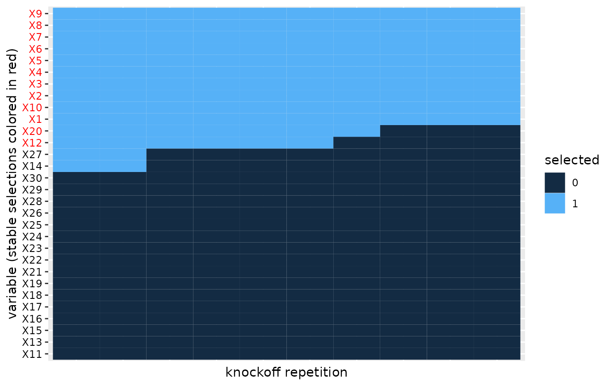

The knockofftools package
Matthias Kormaksson, Kostas Sechidis
January 11, 2024
knockofftools.RmdIntroduction
In this vignette we demonstrate the main functionalities of the knockofftools package. In particular, we demonstrate functions for generating data sets, simulating knockoffs (MX and sequential), applying the multiple knockoff filter for variable selection and visualizing selections.
Let’s first recall how the knockoff variable selection methodology works in a nutshell:
- Simulate a knockoff copy \(\tilde{X}\) of the original covariates data \(X\).
- Compute feature statistics \(W_j=|\beta_j|-|\tilde{\beta}_j|\) from an aggregated regression of \(Y\) on \(X\) and \(\tilde{X}\). Large, positive statistics \(W_j\) indicate association of \(X_j\) with \(Y\).
- For FDR control use the knockoffs\(+\) procedure to select variables \(j\) that fulfill \(W_j \geq \tau_+\) where \[ \tau_+ = \underset{t>0}{\operatorname{argmin}} \left\{\frac{1 + |\{j : W_j \leq t\}|}{|\{j : W_j \leq t\}|} \leq q\right\}. \] This workflow selects variables associated with response with guaranteed control of false discovery rate \(FDR \leq q\).
Data generation
In this section we will simulate a toy data set with a known truth. In particular, we will simulate a set of covariates \(X\) and a response \(y\) that is associated with some of the \(X\)’s through a regression model.
Simulation of \(X\): The
generate_X function simulates the rows of an \(n \times p\) data frame \(X\) independently from a multivariate
Gaussian distribution with mean \(0\)
and \(p \times p\) covariance matrix
\[
\Sigma_{ij} = \left \{
\begin{array}{lr}
1\{i = j\}, & \text{Independent,} \\
\rho^{1\{i \neq j\}}, & \text{Equicorrelated,} \\
\rho^{|i-j|}, & \text{AR1},
\end{array}
\right.
\] where \(p_b\) randomly
selected columns are then dichotomized with the indicator function \(\delta(x)=1(x > 0)\).
# Generate a 2000 x 30 Gaussian data.frame under equi-correlation(rho=0.5) structure,
# with 10 of the columns dichotomized
set.seed(1)
X <- generate_X(n=2000, p=30, p_b=10, cov_type = "cov_equi", rho=0.5)The covariance type is specified with the parameter
cov_type and the correlation coefficient with
rho. Each column of the resulting data.frame is either of
class "numeric" (for the continuous columns) or
"factor" (for the binary columns).
Simulation of \(y|X\): The
generate_y function simulates a response \(y\) from the (sparse) regression model
\[
y = X \beta + \varepsilon, \textrm{ where } \varepsilon \sim N(0,I_n),
\] where the first p_nn regression coefficients are
non-zero, all other are set to zero. The (common) amplitude of the
non-zero regression coefficients is specified with a. Here
we generate \(y\) that is associated
with the first 10 covariates, each with amplitude \(a=0.1\).
# Generate y ~ N(X%*%beta,I_n) where first 10 beta-coefficients are = a, all other = 0.
y <- generate_y(X = X, p_nn=10, a=0.1)Note that inside generate_y the model.matrix of
X is first scaled.
Knockoff generation
Sequential knockoffs: The function knockoff
receives as input a data.frame (or tibble) X whose columns
are either of class "numeric" (for the continuous columns)
or "factor" (for the categorical columns). This is a common
format of data involving both continuous and categorical predictors. The
output is a data.frame (or tibble) corresponding to the knockoff copy of
X:
# Simulate sequential knockoff of X:
Xk <- knockoff(X)The above function will by default sample sequential knockoffs
(method=“seq”) based on LASSO regression (see (Kormaksson et al.
2021)). Behind the scenes, knockoff calls the
function glmnet::cv.glmnet sequentially.
MX-knockoffs: We can also simulate Gaussian MX-knockoffs
(via call to knockoff::create.second_order). This function
only works on data frames with all “numeric” columns.
# Generate a 2000 x 30 Gaussian data.frame under equi-correlation(rho=0.5) structure,
X <- generate_X(n=2000, p=30, p_b=0, cov_type = "cov_equi", rho=0.5)
# Simulate second order multivariate Gaussian MX knockoff:
Xk <- knockoff(X, method="mx")Note that in practice the user does not really need to call the
knockoff function directly, as the two main functions
knockoff.statistics and variable.selections
implement the full knockoff filter workflow. These will now be discussed
below.
Knockoff (feature) statistics
The function knockoff.statistics takes as main input
y, X, and type (defaults to
type="regression") and then proceeds to 1) simulate
independently M knockoffs \(\tilde{X}_k\), \(k=1,\dots,M\), 2) fit an aggregated
regression model: \[\begin{align}
Y = X \beta^{(k)} + \tilde{X}_k \tilde{\beta}^{(k)} + \varepsilon,
\end{align}\] for each of the \(k=1,\dots,M\) knockoff copies. Then finally
calculate (for each knockoff \(k\)) the
corresponding knockoff (feature) statistics \(W^{(k)}_j =
|\beta_j^{(k)}|-|\tilde{\beta}_j^{(k)}|\). By changing the
M parameter of knockoff.statistics we can
calculate multiple knockoff statistics in parallel:
set.seed(123)
X <- generate_X(n=2000, p=30, p_b=0, cov_type = "cov_ar1", rho=0.5)
y <- generate_y(X = X, p_nn=10, 0.1)
W <- knockoff.statistics(y, X, M=10)The output W is a data.frame of knockoff statistics
across the M knockoff replicates.
Since the knockoff.statistics may take long to run for a
single knockoff copy, in particular with sequential knockoffs
(knockoffs.method=“seq”), we use parallel computing via the package
clustermq by default. Note that the user can specify a
cluster.scheduler that is system dependent. On our HPC we utilize the
LSF job scheduler, but other options (including local parallelization)
are outlined here: User
Guide - clustermq
Variable selection based on multiple knockoff statistics
To calculate which variables will be selected for each of these
knockoff statistics we use the variable.selections
function. This function takes the knockoff statistics W as
input and additionally specifies the error.type="fdr"
(default), "pfer" (per family error error), or
"kfwer" (k-familywise error rate) and the corresponding
nominal error level.
S = variable.selections(W, level = 0.1, error.type="fdr")
head(S$selected)
#> S1 S2 S3 S4 S5 S6 S7 S8 S9 S10
#> X1 1 1 1 1 1 1 1 1 1 1
#> X2 1 1 1 1 1 1 1 1 1 1
#> X3 1 1 1 1 1 1 1 1 1 1
#> X4 1 1 1 1 1 1 1 1 1 1
#> X5 1 1 1 1 1 1 1 1 1 1
#> X6 1 1 1 1 1 1 1 1 1 1
S$stable.variables
#> [1] "X1" "X2" "X3" "X4" "X5" "X6" "X7" "X8" "X9" "X10" "X12" "X20"In a nutshell the function will both calculate individual variable
selections (for each knockoff replicate), but also a stable set of
variables that are selected most frequently among the replicates. For
FDR-control the stable variables are calculated using the heuristics in
The multiple knockoffs
filter procedure, while for the other two error types
("pfer" and "kfwer") we simply choose all
variables selected more than thres*M times, where
thres is an optional parameter of the
variable.selections function (thres=0.5 by
default).
Heatmap of multiple variable selections
In order to evaluate the robustness of the knockoff selection procedure we can visualize a heatmap of the selections across the knockoff replicates.
plot(S) We apply co-clustering of the rows and columns of the heatmap and then order the blocks according to increasing mean number of selections. This helps with aesthetics, but also helps visualize the most important variables that should tend towards the top of the heatmap.
Appendix
A. The multiple knockoffs filter procedure for FDR-control
(Kormaksson et al. 2021) introduced a heuristic algorithm for selecting stable variables from multiple independent knockoff variable selections.
Let \(\tilde{X}_1, \dots, \tilde{X}_B\) denote \(B\) independent knockoff copies of \(X\). For each knockoff copy \(b\) run the knockoff filter and select the set of influential variables, \(S_b \subseteq \{1,\dots,p\}\). We propose the following heuristics to select a final set of variables:
- Let \(F(r) \subseteq \{1,\dots,p\}\), where \(r \in [0.5, 1]\), denote the set of variables selected more than \(r \cdot B\) times out of the \(B\) knockoff draws.
- Let \(S(r)=\underset{b}{\rm mode}\{F(r) \cap S_b\}\) denote the set of selected variables that appears most frequently, after filtering out variables that are not in \(F(r)\).
- Return \(\hat{S} = S(\hat{r})\), where \(\hat{r} = \underset{r \geq 0.5}{\operatorname{argmax}} |{S(r)}|\), i.e. the largest set among \(\{S(r):r \geq 0.5\}\).
The first step above essentially filters out variables that don’t appear more than \((100\cdot r)\%\) of the time, which would seem like a reasonable requirement in practice (e.g. with \(r=0.5\)). The second step above then filters the \(B\) knockoff selections \(S_b\) accordingly and searches for the most frequent variable set among those. The third step then establishes the final selection, namely the most liberal variable selection among the sets \(\{S(r):r \geq 0.5\}\).